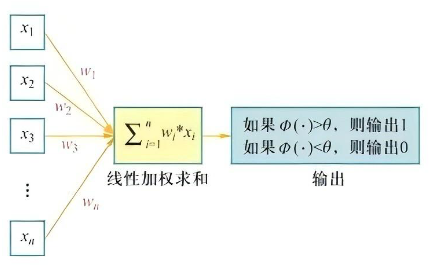
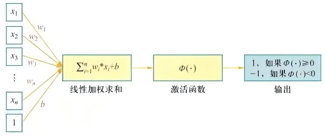
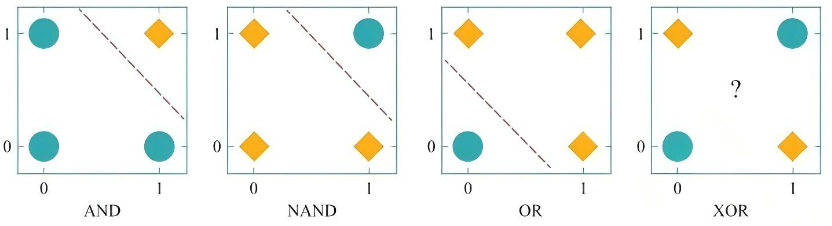
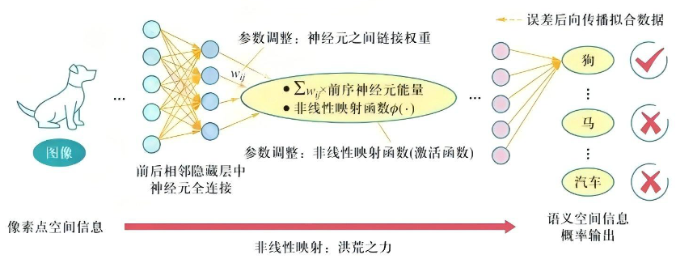
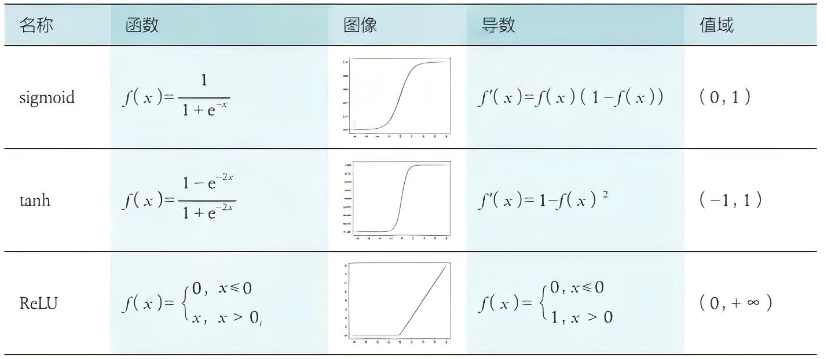
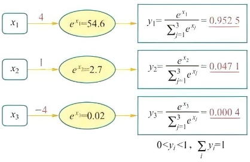
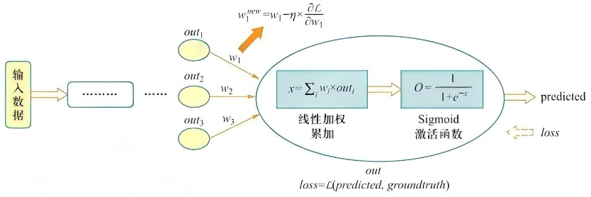
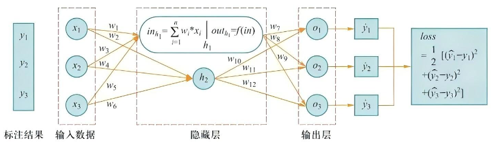

第5章
神经网络与深度学习
Neurons that fire together, wire together. ——Donald Hebb
深度学习模型受到了神经系统层次化结构特性的启发，以“层层递进、逐层抽象”机制来完成特定任务。1949年，心理学家唐纳德·赫布（Donald Hebb）提出了有名的赫布理论（Hebbian theory）：神经元之间持续、重复的经验刺激可导致突触传递效能增加（Neurons that fire together, wire together），即学习和记忆的本质是大脑结构在后期经验刺激下改变神经元之间强弱联结的权重的结果。
受到这一思想启发，1957年，弗兰克·罗森布拉特（Frank Rosenblatt）提出了一种用于解决二分类问题的线性分类器，这种神经网络仅包含输入层和输出层，且连接权重和阈值可学习，被称为“感知机（perceptron）”。但是感知机处理能力有限，这一方法并未引起广泛注意。
在感知器的输入层和输出层之间加入多个隐藏层构成了深度神经网络（deep neural network，DNN），也被称为多层感知机（multilayer perceptron，MLP）或前馈神经网络（feed-forward neural network）。在早期的深度神经网络中，相邻隐藏层之间的神经元相互全连接（但是同一隐藏层内的神经元之间没有任何连接）。为了实现输入端和输出端之间的映射，深度神经网络在每个神经元中引入了具有非线性映射能力的激活函数（activation function）。非线性映射函数的引入，使得深度神经网络比传统感知机具有更好的表达能力。
为了能够“正确”地将输入数据映射到其给定的语义空间，在标注大数据驱动下，可通过链式求导（chain rule derivatives）和误差后向传播（error backpropagation）对神经网络参数进行优化学习。
综上所述，深度学习是一种基于深度神经网络，通过“端到端（end-to-end）”机制学习如何更好地表达数据中所蕴含语义的良好特征方法。
5.1 人工神经网络概述
长久以来，研究者不断探索人类认知的神经基础，这不仅需要精确刻画不同层面的认知现象（如从所观测行为来推测神经元、神经系统和神经回路的工作机理），进而对在不同层面所观测现象之间的因果联系在现有计算载体上进行机械实现，以启发人工智能模型来提高性能和扩展认知能力。
1943年，神经科学家瓦伦·麦卡洛克（Warren McCulloch）和逻辑学家沃尔特·皮茨（Walter Pitts）合作提出了“McCulloch-Pitts（MCP） neuron”的思想。MCP可对输入信号进行线性加权组合，再用符号函数来输出线性加权组合结果，以模拟大脑复杂的活动模式。MCP是最早的神经网络雏形（McCulloch etal., 1943）。MCP模型虽简单，却开启了建立神经网络大厦地基的征途。但是，在MCP中，输入数据只能是0或1这样的二值化数据，网络中连接权重和符号函数阈值等参数无法从数据中学习，需要预先人为手工设置。
1949年，心理学家唐纳德·赫布提出了著名的赫布理论，指出“神经元之间持续、重复的经验刺激可导致突触传递效能增加”，“神经元之间突触的强弱变化是学习与记忆的生理学基础”。这一理论为联结主义人工智能研究提供了认知神经心理学基础（Hebb, 1949）。
1958年，戴维·胡贝尔（David Hubel）和托尔斯滕·维泽尔（Torsten Wiesel）在实验中发现小猫后脑皮层中不同视觉神经元与瞳孔所受刺激之间存在某种对应关系，由此发现了一种被称为“方向选择性细胞（orientation selective cell）”的神经元细胞，从而揭示了“视觉系统信息分层处理”这一机制（Hubel etal., 1959, 1962）。由于这一贡献，他们共同获得了1981年的诺贝尔生理学或医学奖。
神经网络研究的突破来自弗兰克·罗森布拉特在20世纪50年代提出的感知机模型（Rosenblatt, 1962）。感知机模型是一个仅包含输入层和输出层的两层神经网络。对于一个线性可分二分类问题，从理论上可证明感知机能且一定能将线性可分的两类数据区分开来。在具体计算中，感知机先将输入数据按照一定权值进行线性累加，再利用符号函数对累加结果进行映射，以获得1或-1形式的输出结果，来解决二分类问题。与MCP不同，感知机中的连接权重和符号函数阈值可以从数据中进行学习，且不再要求输入数据是二值化结果。1969年，马文·明斯基（Marvin Minsky）和西摩·佩珀特（Seymour A.Papert）出版了《感知机：计算几何学》（Minsky etal., 1969），书中证明了由输入层和输出层构成的感知机能力极其有限，甚至无法完成异或（XOR）这一基本逻辑计算问题。并且指出，如果在感知机中增加隐藏层，则会因计算量过大而无法学习得到良好的模型参数。这本书的出版使得神经网络的早期发展陷入低谷。
由于感知机中没有包含非线性变换操作的隐藏层，因此感知机表达能力较弱（如无法解决异或问题）。如果在感知机中加入多个隐藏层，那么所形成的多层感知机则具备更强的表达能力，只是一旦增加了隐藏层，就需要有效的计算方法来解决深度神经网络模型中参数的优化训练问题。
最早由Werbos提出（Werbos, 1974，1990）并且由鲁梅尔哈特（Rumelhart）和欣顿（Hinton）等人（Rumelhart etal., 1986）完善的误差后向传播算法解决了多层感知机中参数优化这一难题。在多层感知机中，由于隐藏层中每个神经元均包含具备非线性映射能力的激活函数（如sigmoid），因此其可用来构造复杂的非线性分类函数。
2006年，欣顿在Science等期刊上发表论文，首次提出“深度信念网络（deep belief network）”模型（Hinton etal., 2006），在相关分类任务中可取得性能超过传统浅层学习模型（如支持向量机）的结果，使得深度架构引起了大家的关注。与传统的训练方式不同，深度信念网络有一个“预训练（pre-training）”的过程，可为神经网络中的连接权重找到一个接近最优解的值，之后再使用“微调（fine-tuning）”技术对整个网络的参数进行优化训练。这两项技术大幅度减少了训练多层神经网络的时间开销。欣顿给与多层神经网络相关的学习方法赋予了一个新名词——“深度学习”。
深度学习的兴起推动了不同类型深度学习网络模型的研究。为了解决前馈神经网络无法处理反馈信息的不足，循环神经网络（recurrent neural network, RNN）思想被提出，其中包括霍恩·霍普菲尔德（John Hopfield）提出的霍普菲尔德反馈神经网络（Hopfield neural network）（Hopfield, 1982）、Elman-RNN（Elman, 1990）、Jordan-RNN（Jordan, 1997），以及长短时记忆网络（Hochreiter etal., 1997）、门控循环单元（gated recurrent unit, GRU）（Cho etal., 2014）；从早期进行手写体识别的卷积神经网络LeNet（Lecun etal., 1998）到2012年推动深度学习成为热点，用于图像分类任务的卷积神经网络AlexNet（Krizhevsky etal., 2012）；从神经语言模型（neural language model）（Bengio etal., 2003）到词向量模型（word2vec）（Mikolov etal., 2013）及BERT（bidirectional encoder representations from transformers）模型（Devlin etal., 2018）等。
深度学习的基本动机在于通过“端到端学习（end-to-end learning）”这一机制来构建多层神经网络，以学习隐含在数据内部的关系，从而使学习所得特征具有更强的表达能力。在大规模数据上进行的实验已经表明：通过深度学习得到的特征表示在自然语言理解、图像分类、语音处理和视频识别等领域表现出了良好性能。
5.2 前馈神经网络
前馈神经网络作为最基础的神经网络，一般包括输入层、隐藏层和输出层。每层神经元只和相邻层的神经元相连，即每层神经元只接收相邻前序神经层中神经元所传来的信息，只给相邻后续神经层中神经元传递信息。在前馈神经网络中，同一层的神经元之间没有任何连接，后续神经层不向其前序相邻神经层传递任何信息。前馈神经网络是目前应用最为广泛的神经网络之一。在正式介绍前馈神经网络之前，先介绍神经元、感知机和激活函数等概念。
5.2.1 神经元
在生物学中，神经元细胞有兴奋与抑制两种状态。大多数神经元细胞在正常情况下处于抑制状态，一旦某个神经元受到刺激并且电位超过一定的阈值后，这个神经元细胞就被激活，处于兴奋状态，并向其他神经元传递信息。基于神经元细胞的结构特性与信息传递方式，神经科学家瓦伦·麦卡洛克和逻辑学家沃尔特·皮茨合作提出了MCP模型。在人工神经网络中，MCP模型成为最基本的结构。MCP模型结构如图5.1所示。
从图5.1可见，给定\(n\)个二值化（0或1）的输入数据\(x_i(1 \leqslant i \leqslant n)\)与连接参数\(w_i(1 \leqslant i \leqslant n)\)，MCP神经元模型对输入数据线性加权求和，然后使用函数\(\phi(\cdot)\)将加权累加结果映射为0或1，以完成二分类任务，即

图5.1 MCP模型结构其中，\(w_i\) 为预先设定的连接权重值（一般在0和1中取一个值或者1和-1中取一个值），用来表示其所对应输入数据对输出结果的影响（即权重）。\(\Phi(\cdot)\) 将输入端数据与连接权重所得线性加权累加结果与预先设定的阈值 \(\theta\) 进行比较，根据比较结果输出1或0。具体而言，如果线性加权累加结果（即 \(\sum_{i=1}^{n} w_{i}x_{i}\)）大于阈值 \(\theta\)，则函数 \(\Phi(\cdot)\) 的输出为1，否则为0。也就是说，如果线性加权累加结果大于阈值 \(\theta\)，则神经元细胞处于兴奋状态，向后传递1的信息；否则该神经元细胞处于抑制状态而不向后传递信息。
从另外一个角度来看，对于任何输入数据 \(x_i(1 \leqslant i \leqslant n)\)，MCP模型可得到1或0这样的输出结果，也就是实现了将输入数据分类到1或0两个类别中，解决了二分类问题。
瓦伦·麦卡洛克于1954年在《英国科学哲学期刊》发表的一篇题为《走出形而上学的洞穴》（rough the Den of the Metaphysician）的文章中激动、骄傲地写道：“在科学史上第一次，我们知道了我们是怎么知道的。(For the first time in the history of science we know how we know and hence are able to state it clearly.)”。他认为可通过如上计算方式来模拟神经元对输入信号进行抑制和兴奋的机制。若干个MCP神经元前后相连就构成了最早的神经网络雏形。
5.2.2 感知机
1957年，弗兰克·罗森布拉特提出了一种简单的人工神经网络，称为感知机。早期的感知机结构和MCP模型相似，由一个输入层和一个输出层构成，因此也被称为“单层感知机”。感知机的输入层负责接收实数值的输入向量，输出层则能输出1或-1两个值。单层感知机可作为一种两类线性分类模型，如图5.2所示。

图5.2 感知机模型对于具有 \(n\) 个输入及对应连接权重系数为 \(w_i\) 的感知机，首先通过线性加权得到输入数据的累加结果 \(z = w_1x_1 + w_2x_2 + \dots + b\)。这里 \(x_1,x_2,\dots,x_n\) 为感知机的输入，\(b\) 为偏置项（bias）。然后将 \(z\) 作为激活函数 \(\phi(\cdot)\) 的输入，激活函数会将 \(z\) 与某一阈值（此例中阈值为0）进行比较，如果大于该阈值，则感知器输出为1；否则输出为-1。通过这样的操作，输入数据被分类为1或-1这两个不同类别。
单层感知机与MCP模型在连接权重的设置上不同，即感知机中的连接权重参数并不是预先设定好的，而是通过多次迭代训练得到的。具体而言，单层感知机通过构建损失函数来计算模型预测值与数据真实值之间的“误差”，通过最小化损失函数取值来优化模型参数。
单层感知机可被用来区分线性可分数据。在图5.3中，逻辑与（AND）、逻辑与非（NAND）和逻辑或（OR）为线性可分函数，因此可利用单层感知机来模拟这些逻辑函数。但是，由于逻辑异或（XOR）是非线性可分的逻辑函数，因此单层感知机无法模拟逻辑异或函数的功能。

图5.3 单层感知机模拟不同逻辑函数功能示意5.2.3 前馈神经网络
无法模拟诸如异或及其他复杂函数的功能，使得单层感知机的应用较为单一。一个简单的想法是，如果能在感知机模型中增加若干隐藏层，增强神经网络的非线性表达能力，就会让神经网络具有更强的拟合能力。因此，由多个隐藏层构成的多层感知机被提出，这也被称为前馈神经网络。
如图5.4所示，前馈神经网络由输入层、输出层和若干隐藏层构成。网络中各个隐藏层中的神经元可接收相邻前序隐藏层中所有神经元传递而来的信息，经过加工处理后，将信息输出给相邻后续隐藏层中的所有神经元。

图5.4 前馈神经网络模型前馈神经网络中相邻层所包含的神经元之间通常使用全连接方式进行连接。所谓全连接，是指两个相邻层之间的神经元相互成对连接，但同一层内的神经元之间没有连接。前馈神经网络可以模拟复杂非线性函数的功能，所模拟函数的复杂性取决于网络隐藏层的数目和各层中神经元的数目。
在前馈神经网络中，输入一个数据（如狗的图像），输入的空间像素点信息以层层递进、逐层抽象的方式被加工处理，模型试图以最大概率输出正确结果（文本语义单词“狗”）。在这个过程中，神经元起了重要作用。每个神经元对前序相邻神经元传递过来的信息按照连接权重加权累加，然后对加权累加结果施以非线性变换。
在现实世界中，非线性是世界万事万物运转的魂魄。恩里科·费米（Enrico Fermi）曾经说过，“圣经中并没有说过一切大自然的定律都可以用线性方程来表示”，线性系统实际上只是对少数简单非线性系统的理论近似。一个神经元对信息进行了一次非线性加工，亿万个神经元所组成的神经网络就可实现将输入数据（如图像、文本和听觉等信息）从一个空间（如像素点空间）映射到另外一个空间（如文本单词空间等），这一过程就是一个复杂的非线性变换。
如果映射出现误差，则稍后介绍的误差后向传播算法会将误差（由损失函数定义）从输出端由后向前传播，逐层更新神经元连接权重和非线性映射函数等参数，使得神经网络模型拟合数据（data fitting）。这一过程好比在大数据驱动下，神经网络中一条条通道被打通，让神经元之间记住这种刺激或者强化信息流通路，打通“任督二脉”，从而在输入数据和输出结果之间建立关联。
神经网络多以激活函数（activation function）来实现单个神经元的非线性映射变换，通过对多个非线性函数进行组合，最终实现对输入信息的非线性变换。下面介绍若干有代表性的激活函数（见表5.1）。后面将介绍，为了能够使用梯度下降方法通过误差后向传播来训练神经网络参数，激活函数必须是连续可导的。
表5.1 有代表性的激活函数

1. sigmoid 函数
对于输入数据 \(x\)，sigmoid 函数的数学表达式如下所示： $$ f(x)=\frac{1}{1+\mathrm{e}^{-x}} $$
选取 sigmoid 函数作为激活函数，因其具有如下优点： (1) 概率形式输出。sigmoid 函数的值域为 \((0,1)\)，因此 sigmoid 函数的输出可视为概率值。
(2) 单调递增。sigmoid 函数对输入 \(x\) 的取值范围没有限制，但当 \(x\) 大于一定值时，函数输出无限趋近于 1；而当 \(x\) 小于一定数值时，函数输出无限趋近于 0。特别地，当 \(x=0\) 时，函数输出为 0.5。
(3) 非线性变化。当 \(x\) 取值在 0 附近时，函数输出值的变化幅度比较大（函数值变化陡峭），意味着函数在 0 附近容易被激活且是非线性变化的。当 \(x\) 取值很大或很小时，函数输出值几乎不变，这是基于概率的一种认识与需要。
sigmoid 函数的导数可以通过如下方式推导得到： $$ \begin{aligned} f'(x) &= \left(\frac{1}{1+\mathrm{e}^{-x}}\right)' = \frac{\mathrm{e}^{-x}}{(1+\mathrm{e}^{-x})^2} = \frac{1+\mathrm{e}^{-x}-1}{(1+\mathrm{e}^{-x})^2} = \frac{1}{(1+\mathrm{e}^{-x})}\left(1-\frac{1}{(1+\mathrm{e}^{-x})}\right) \ &= f(x)\left(1-f(x)\right) \end{aligned} $$
由于 \(0<f(x)<1\) 且 \(0<1-f(x)<1\)，因此 sigmoid 函数的导数 \(f(x)\left(1-f(x)\right)\) 小于 1。这样，当把 sigmoid 函数作为激活函数时，在使用反向传播算法更新参数的过程中易出现导数过于接近于 0 的情况，即梯度消失（vanishing gradient）的问题，并且这个问题会随着网络的深度增加而变得愈发严重。梯度消失这一问题使得在神经网络中已很少使用 sigmoid 函数作为激活函数。
2. tanh 函数
对于输入数据 \(x\)，tanh 函数的数学表达式如下所示： $$ f(x)=\frac{1-\mathrm{e}^{-2x}}{1+\mathrm{e}^{-2x}} $$
tanh 函数的函数图像和 sigmoid 函数较为相似，它在定义域上也为单调递增，值域为 \((-1,1)\)。相较于 sigmoid 函数，tanh 函数在坐标原点附近的梯度更大。在实际应用中，使用 tanh 函数的神经网络更容易收敛。
但是，tanh 函数与 sigmoid 函数都面临梯度消失问题，即梯度会随着网络深度增加而逐渐消失。
3. ReLU 函数
ReLU（rectified linear unit，修正线性单元）函数是目前使用较为普遍的激活函数，其数学表达式如下所示： $$ f(x)= \begin{cases} 0, & x<0 \ x, & x\ge 0 \end{cases} \quad \text{或者 } f(x)=\max(0,x) $$
ReLU 函数的导数为： $$ f'(x)= \begin{cases} 0, & x<0 \ 1, & x\ge 0 \end{cases} $$
当输入 \(x\ge 0\) 时，ReLU 的导数为常数，这样可有效缓解梯度消失问题。当 \(x<0\) 时，ReLU 的梯度总是 0，导致神经网络中若干参数的激活值为 0，即参与分类等任务的神经元数目稀缺，这种稀疏性可以在一定程度上克服机器学习中经常出现的过拟合现象。然而，当 \(x<0\) 时，ReLU 梯度为 0 也导致神经元“死亡”，即神经元对应的权重永远不会更新。为了解决这个问题，可以使用其他激活函数，如 Leaky ReLU 或 Parametric ReLU，它们在 \(x<0\) 时的梯度取非零值。
4. softmax 激活函数
softmax 函数一般用于多分类问题中，它是对逻辑斯谛回归的一种推广，也被称为多项逻辑斯谛回归模型（multi-nominal logistic mode）。假设要实现 \(k\) 个类别的分类任务，softmax 函数将输入数据 \(x_i\) 映射到第 \(i\) 个类别的概率 \(y_i\) 如下计算： $$ y_i=\text{softmax}(x_i)=\frac{\mathrm{e}^{x_i}}{\sum_{j=1}^{k}\mathrm{e}^{x_j}} $$
显然，\(0<y_i<1\)。图5.5给出了三分类问题的softmax输出示意。在图中，对于取值为4、1和-4的 \(x_1\)、\(x_2\) 和 \(x_3\)，通过softmax变换后，将其映射到 \(((0,1))\) 之间的概率值。
由于softmax输出结果的值累加起来为1，因此可将输出概率最大的作为分类目标（在图5.5中被分类为第一类）。
也可以从如下角度来理解图5.5中的内容：给定某个输入数据，可得到其分类为三个类别的初始结果，分别用 \(x_1\)、\(x_2\) 和 \(x_3\) 表示。这三个初始分类结果分别是4、1和-4。通过softmax函数，得到三个类别分类任务中以概率表示的更好的分类结果，即分别以95.25%、4.71%和0.04%归属于类别1、类别2和类别3。显然，基于这样的概率值，可判断输入数据属于第一类。可见，通过使用softmax函数，可求取输入数据在所有类别上的概率分布。

图5.5 三分类问题的softmax输出示意5.3 神经网络参数优化
在设计完成一个多层神经网络的结构（例如多少个隐藏层，每个隐藏层中包含的神经元数目及神经元采用的非线性激活函数等）后，需要对神经网络中的参数（如神经元之间的连接权重系数及激活函数系数等）进行优化学习，以使得神经网络能够将给定输入数据映射到所期望的输出语义空间（如将一幅由像素点构成的图像数据映射为人脸），完成分类识别等任务。
神经网络参数优化是一个监督学习的过程。给定 \(n\) 个标注样本数据 \((x_i,y_i)\)，这里 \(x_i\) 是输入数据，\(y_i\) 是 \(x_i\) 的类别等标注信息。假设输入数据 \(x_i\) 经过神经网络处理后所得输出预测值为 \(\hat y_i\)，则可通过损失函数来计算模型预测值 \(\hat y_i\) 与真实值 \(y_i\) 之间的误差或损失，利用其来优化模型参数，以便让神经网络按照 \(x_i\) 的真实信息 \(y_i\) 输出，即让神经网络对数据进行拟合。
具体而言，模型会利用反向传播算法将损失函数计算所得误差从输出端出发，由后向前传递给神经网络中每个单元，然后通过梯度下降算法对神经网络中的参数进行更新。随着迭代的进行，模型预测所得 \(\hat y_i\) 与真实值 \(y_i\) 之间的误差逐步缩小，模型预测准确率得以提升，预测的能力得以增强，当迭代达到一定轮次或准确率达到一定水平时，则可认为模型参数已被优化完毕。
5.3.1 损失函数
损失函数（loss function）又称为代价函数（cost function），用来计算模型预测值与真实值之间的误差。损失函数是神经网络设计中的一个重要组成部分。通过定义与任务相关的良好损失函数，在训练过程中可根据损失函数来计算神经网络的误差大小，进而优化神经网络参数。
下面介绍两种最常用的损失函数：均方误差损失函数和交叉熵损失函数。
1. 均方误差损失函数
均方误差损失函数通过计算预测值与实际值之间距离（即误差）的平方来衡量模型优劣。假设有 \(n\) 个训练数据 \(x_i\)，每个训练数据 \(x_i\) 的真实输出为 \(y_i\)，模型对 \(x_i\) 的预测值为 \(\hat y_i\)。该模型在 \(n\) 个训练数据下所产生的均方误差损失可定义如下： $$ \text{MSE}=\frac{1}{n}\sum_{i=1}^{n}(y_i-\hat y_i)^2 $$
2. 交叉熵损失函数
在物理学中，“熵”被用来表示热力学系统所呈现的无序程度。香农将这一概念引入信息论领域，提出了“信息熵”概念，通过对数函数来测量信息的不确定性。
交叉熵（cross entropy）是信息论中的重要概念，主要用来度量两个概率分布间的差异。\(y_i\) 是样本 \(x_i\) 分类的真实概率，\(\hat y_i\) 是模型预测概率，通过 \(\hat y_i\) 来表示 \(y_i\) 的交叉熵可如下计算： $$ H(y_i,\hat y_i)=-y_i\times\log\hat y_i $$
交叉熵刻画了两个概率分布之间的距离，旨在描绘通过概率分布 \(\hat y_i\) 来表达概率分布 \(y_i\) 的困难程度。根据公式不难理解，两个概率分布 \(y_i\) 和 \(\hat y_i\) 越接近，交叉熵越小。也就是说，预测类别分布概率与实际类别分布概率之间的差距越小，交叉熵就越小。
这里以一个示例来说明这个事实。假设模型1和模型2分别对三个分别属于类别1、类别2和类别3的样本进行分类，得到如表5.2所示的分类结果。
表5.2 两个模型的分类结果 | 样本 | 真实值 | 模型1预测结果 | 模型2预测结果 | | ---- | ---- | ---- | ---- | | 样本1（类别1） | 0 0 1 | 0.3 0.3 0.4 | 0.1 0.2 0.7 | | 样本2（类别2） | 0 1 0 | 0.3 0.4 0.3 | 0.1 0.7 0.2 | | 样本3（类别3） | 1 0 0 | 0.1 0.2 0.7 | 0.3 0.4 0.3 |
模型1在三个样本上的交叉熵损失平均值为 $$ \frac{-(0\times \log 0.3 + 0\times \log 0.3 + 1\times \log 0.4 + 0\times \log 0.3 + 1\times \log 0.4 + 0\times \log 0.3 + 1\times \log 0.1 + 0\times \log 0.2 + 0\times \log 0.7)}{3}=1.37 $$
模型2在三个样本上的交叉熵损失平均值为 $$ \frac{-(0\times \log 0.1 + 0\times \log 0.2 + 1\times \log 0.7 + 0\times \log 0.1 + 1\times \log 0.7 + 0\times \log 0.2 + 1\times \log 0.3 + 0\times \log 0.4 + 0\times \log 0.3)}{3}=0.63 $$
可见，交叉熵损失函数准确给出了模型2预测性能优于模型1预测性能的事实。如果模型预测值与真实值一致，则交叉熵损失为零。
5.3.2 梯度下降
梯度下降（gradient descent）算法是机器学习中对模型参数进行优化时所采用的常用方法。为了让模型预测结果与真实结果之间的损失误差最小，利用梯度下降法来逐步迭代优化模型参数。当损失误差最小时，此时学习得到的模型参数即为模型的最优参数。
下面说明损失函数梯度的反方向是损失误差下降最快的方向。假设损失函数 \(f(x)\) 是连续可微的多元变量函数，其泰勒展开如下： $$ f(x+\Delta x)=f(x)+f'(x)\Delta x+\frac12 f''(x)(\Delta x)^2+\dots+\frac{1}{n!}f^{(n)}(x)(\Delta x)^n $$ $$ f(x+\Delta x)-f(x)\approx (\nabla f(x))^\mathrm{T}\Delta x $$
假设参数变量当前取值为 \(x\)，其对应的损失误差数值为 \(f(x)\)。在不断促使损失误差减少的下一步迭代时，\(x\) 取值变化为 \(x+\Delta x\)，则损失误差数值相应地变为 \(f(x+\Delta x)\)。
由于 \(f(x)\) 是损失函数，因此在迭代中希望 \(f(x+\Delta x)\) 取值小于 \(f(x)\)，即损失误差随着模型参数被优化而逐渐减少，使得 \(f(x+\Delta x)<f(x)\)，于是 \((\nabla f(x))^\mathrm{T}\Delta x<0\)。
在 \((\nabla f(x))^\mathrm{T}\Delta x=\|\nabla f(x)\|\|\Delta x\|\cos\theta\) 中，\(\|\nabla f(x)\|\) 和 \(\|\Delta x\|\) 分别为损失函数梯度的模和下一轮迭代中 \(x\) 取值增量的模，两者均为正数。为了保证损失误差减少，只要保证 \(\cos\theta<0\) 即可。当 \(\theta=180^\circ\) 时，\(\cos\theta=-1\)，这时损失函数减少的幅度值 \((\nabla f(x))^\mathrm{T}\Delta x\) 最小。可见，当损失函数梯度 \(\nabla f(x)\) 和 \(x\) 取值增量 \(\Delta x\) 之间的夹角为 \(180^\circ\) 时，损失误差减少最多。于是，在迭代过程中为了最小化损失误差，每次迭代时可沿着损失函数梯度的反方向（即 \(\theta=180^\circ\)）以 \(\Delta x\) 幅度来改变 \(x\) 取值，这样会保证 \(f(x+\Delta x)\) 和 \(f(x)\) 之间的差值最大（即损失误差下降最快）。
于是，当 \(\theta=180^\circ\) 时，\(f(x+\Delta x)\) 和 \(f(x)\) 之间的差值为 \(f(x+\Delta x)-f(x)=\|\nabla f(x)\|\|\Delta x\|\cos\theta=-\|\Delta x\|\|\nabla f(x)\|\)。这说明只要沿着损失函数梯度的反方向选取 \(x\) 的增量 \(\Delta x\)，就能保证损失误差下降最多、下降最快，犹如从山峰处沿着最陡峭的路径可快速走到山谷。前面的推导中忽略了损失函数的二阶导数及其高阶导数的取值，因此在实际中引入步长 \(\eta\)，用 \(x-\eta\nabla f(x)\) 来更新 \(x\)（在具体实现时 \(\eta\) 可取一个定值）。
从下面的公式可以计算得到变量的增量为 \(-\eta\nabla f(x)\)，即 $$ \underbrace{x-\eta\nabla f(x)}{\text{变量更新后的取值}}-\underbrace{x} $$}}=\underbrace{-\eta\nabla f(x)}_{\text{变量的增量}
由于 \(f(x+\Delta x)-f(x)\approx (\nabla f(x))^\mathrm{T}\Delta x=-\eta(\nabla f(x))^2<0\)，因此损失误差会不断减少。由于又选择了损失函数梯度的反方向来改变变量权重，因此损失函数计算的误差减少最快。
在上面的推导中，如果 \(\theta=0^\circ\)，即沿着函数梯度的方向以 \(\Delta x\) 来改变 \(x\) 取值，则 \(f(x+\Delta x)-f(x)\) 之差为最大值。这意味着函数的梯度方向是函数值增加最快的方向，而梯度的反方向则是函数值下降最快的方向。
这里要注意的是，多元函数在某一点的梯度是其由多元函数对每个变量的偏导数组成的（即求函数梯度时需要对各个变量求偏导），其方向为函数在该点增加最快的方向，梯度大小为多元函数在该点的最大变化率。多元函数相对于它的某个自变量的偏导数，是假定其他自变量不变时，对该自变量的导数。
对于优化问题来说，凸函数具有一个良好性质：凸函数的局部最优解即是全局最优解。因此对于凸函数而言，梯度下降法总是能够找到函数的全局最小值。为了达到这一目的，损失函数一般采用凸函数。
5.3.3 误差反向传播
误差反向传播（error back propagation）算法主要利用损失函数来计算模型预测结果与真实结果之间的误差以优化调整模型参数，这一优化调整机制是从输出端向输入端，由后向前递进进行的。
如前所述，损失函数梯度反方向是损失误差下降最快的方向。在求取损失函数梯度时需要对各个变量求偏导，这一求取偏导的过程要用到链式法则（chain rule）。
如图5.6所示，out 是一个神经单元，其在神经网络中完成两个任务：① 将相邻前序神经元传递而来的信息线性加权累加，得到结果 \(\chi\)，即 \(\chi=\sum\limits_{i} w_i\times \text{out}_i \ (1\le i\le 3)\)。这里 \(\text{out}_i\) 和 \(w_i\) 分别是与 out 前序相连的第 \(i\) 个神经元后向传递的信息及第 \(i\) 个神经元与 out 之间的连接权重系数；② 使用激活函数对加权累加结果进行非线性变换。图5.6中使用的激活函数为 sigmoid，即 \(O=\dfrac{1}{1+\mathrm{e}^{-\chi}}\)。可见，\(O\) 的大小就是神经网络对输入样本数据的预测输出。

图5.6 链式求导与模型参数更新示意图5.6中，模型预测结果 \(O\) 与真实结果之间的损失误差 loss 由所定义的损失函数 \(\mathcal{\mathcal{L}}\) 计算得到。现在的问题是如何根据这个误差来优化调整连接权重系数 \(w_i\)（以及按照同样的模式来调整图中未出现的神经网络的其他参数），使得训练得到的模型尽可能输出预期结果。
首先看如何调整 \(w_1\)。按照前面的讨论，损失函数 \(\mathcal{\mathcal{L}}\) 取值下降最快的方向是其梯度方向的反方向。为了使损失函数 \(\mathcal{\mathcal{L}}\) 取值减少（从而保证模型预测结果与实际结果之间的差距越来越小），需要求取损失函数 \(\mathcal{\mathcal{L}}\) 相对于 \(w_1\) 的偏导，然后按照损失函数梯度的反方向选取一个微小的增量来调整 \(w_1\) 的取值，就能够保证损失函数取值减少。即将 \(w_1\) 变为 \(w_1-\eta\dfrac{\partial \mathcal{\mathcal{L}}}{\partial w_1}\) 后，能使得损失误差减少。这里 \(\dfrac{\partial \mathcal{\mathcal{L}}}{\partial w_1}\) 为损失函数 \(\mathcal{\mathcal{L}}\) 对 \(w_1\) 的偏导。
由于 \(w_1\) 与加权累加函数 \(\chi\) 和 sigmoid 函数均有关，因此\(\frac{\partial \mathcal{\mathcal{L}}}{\partial w_1}=\frac{\partial \mathcal{\mathcal{L}}}{\partial o}\frac{\partial o}{\partial \chi}\frac{\partial \chi}{\partial w_1}\)。在这个链式求导中：\(\dfrac{\partial \mathcal{\mathcal{L}}}{\partial o}\) 与损失函数的定义有关；\(\dfrac{\partial o}{\partial \chi}\) 是对 sigmoid 函数求导，结果为 \(\dfrac{1}{1+\mathrm{e}^{-\chi}}\times\left(1-\dfrac{1}{1+\mathrm{e}^{-\chi}}\right)\)；\(\dfrac{\partial \chi}{\partial w_1}\) 是加权累加函数 \(w_1\times \text{out}_1+w_2\times \text{out}_2+w_3\times \text{out}_3\) 对 \(w_1\) 求导，结果为 \(\text{out}_1\)。
链式求导实现了损失函数对某个自变量求偏导，好比将损失误差从输出端向输入端逐层传播，通过这个传播过程更新该自变量的取值。由梯度下降法可知，只要沿着损失函数梯度的反方向更新参数，就可使得损失函数下降最快。
因此，假设损失函数为 \(\mathcal{\mathcal{L}}(\theta)\)（\(\theta\) 为参数），可使用如下梯度下降算法对参数 \(\theta\) 进行更新：\(\theta^{\text{new}}=\theta-\eta\times \nabla \theta \mathcal{\mathcal{L}}(\theta)\)。其中，\(\eta\) 也被称为学习速率（learning rate），其大小会影响模型参数的收敛速度，\(\nabla \theta \mathcal{\mathcal{L}}(\theta)\) 是损失函数对参数 \(\theta\) 求偏导的结果。神经网络中任意一个参数相对于损失函数的导数都可通过链式求导得到（这一求导过程可视为误差后向传播过程）。
在图5.6中，参数 \(w_1\) 在下一轮迭代中的取值被调整为 $$ w_1^{\text{new}}=w_1-\eta\times \frac{\partial \mathcal{L}}{\partial w_1}=w_1-\eta\times \frac{\partial \mathcal{L}}{\partial o}\frac{\partial o}{\partial \chi}\frac{\partial \chi}{\partial w_1}=w_1-\eta\times \frac{\partial \mathcal{L}}{\partial o}\times \frac{1}{1+\mathrm{e}^{-\chi}}\times \left(1-\frac{1}{1+\mathrm{e}^{-\chi}}\right)\times \text{out}_1 $$ 按照同样的方法，可调整 \(w_2\)、\(w_3\) 及其他图中未显示参数的取值。经过这样的调整，在模型参数新的取值作用下，损失函数 \(\mathcal{L}(\theta)\) 会以最快下降方式逐渐减少，直至减少到最小值（即全局最小值）。
梯度下降算法可以分为批量梯度下降算法（batch gradient descent）、随机梯度下降算法（stochastic gradient descent）和小批量梯度下降算法（mini-batch gradient descent）等类型。批量梯度下降算法是在整个训练集上计算损失误差 \(\mathcal{L}(\theta)\)。如果数据集较大，则会因内存容量不足而无法完成梯度计算。随机梯度下降算法是使用训练集中的每个训练样本计算 \(\mathcal{L}(\theta)\) 来分别更新参数。因为随机梯度下降每次迭代只使用一个样本，导致梯度方向具有很大的波动，因此其收敛速度通常较慢。尽管如此，随机梯度下降的随机性有助于跳出局部最优解，有时可能找到更好的解。小批量梯度下降算法是选取训练集中的小批量样本计算 \(\mathcal{L}(\theta)\)，根据每一批量样本所得到的累加误差来更新参数，这样可保证训练过程更稳定，而且采用批量训练方法也可利用矩阵计算优势，因此其成为目前最常用的梯度下降算法。
5.3.4 误差反向传播与参数更新示例
在了解误差反向传播算法与梯度下降算法后，下面通过一个三分类的具体示例来介绍神经网络中参数的更新过程。给定一个包含输入层、一层隐藏层和输出层的多层感知机（见图5.7），其中隐藏层由两个神经元构成。这里为了简化介绍过程，只使用了一层隐藏层。网络使用 sigmoid 函数作为神经元的激活函数，使用均方损失函数来计算网络输出值与实际值之间的误差。

图5.7 包含一个隐藏层的前馈神经网络在图5.7中，每个神经元完成如下两项任务：① 对相邻前序层传递的信息进行线性加权累加；② 对加权累加结果进行非线性变换。假设样本数据输入为 \((x_1,x_2,x_3)\)，其标注信息为 \((y_1,y_2,y_3)\)。在三分类问题中，对于输入数据 \((x_1,x_2,x_3)\)、\(y_1\)，\(y_2\)，和 \(y_3\) 中只有一个取值为1，其余两个取值为0。
表5.3给出了 \(h_1\)、\(h_2\)、\(o_1\)、\(o_2\) 和 \(o_3\) 所承担两项任务的内容。
表5.3 图5.7中神经网络各单元的计算结果 | 单元 | 相邻前序神经元所传递信息的线性累加 | 非线性变换 | | ---- | ---- | ---- | | \(h_1\) | \(\text{In}_{h_1}=w_1\times x_1+w_3\times x_2+w_5\times x_3\) | \(\text{Out}_{h_1}=\text{sigmoid}(\text{In}_{h_1})\) | | \(h_2\) | \(\text{In}_{h_2}=w_2\times x_1+w_4\times x_2+w_6\times x_3\) | \(\text{Out}_{h_2}=\text{sigmoid}(\text{In}_{h_2})\) | | \(o_1\) | \(\text{In}_{o_1}=w_7\times \text{Out}_{h_1}+w_{10}\times \text{Out}_{h_2}\) | \(\hat y_1=\text{Out}_{o_1}=\text{sigmoid}(\text{In}_{o_1})\) | | \(o_2\) | \(\text{In}_{o_2}=w_8\times \text{Out}_{h_1}+w_{11}\times \text{Out}_{h_2}\) | \(\hat y_2=\text{Out}_{o_2}=\text{sigmoid}(\text{In}_{o_2})\) | | \(o_3\) | \(\text{In}_{o_3}=w_9\times \text{Out}_{h_1}+w_{12}\times \text{Out}_{h_2}\) | \(\hat y_3=\text{Out}_{o_3}=\text{sigmoid}(\text{In}_{o_3})\) |
一旦神经网络在当前参数下给出了预测结果 \((\hat y_1,\hat y_2,\hat y_3)\) 后，通过均方误差损失函数来计算模型预测值与真实值 \((y_1,y_2,y_3)\) 之间的误差，记为\(\text{loss}=\frac{1}{3}\sum_{i=1}^{3}(\hat y_i-y_i)^2\)。
接下来通过梯度下降和误差反向传播方法，沿着损失函数梯度的反方向更改参数变量的取值，使得损失函数快速下降到其最小值。由于损失函数对 \(w_7\sim w_{12}\) 的偏导计算相似，在此以 \(w_7\) 为例来介绍如何更新 \(w_7\) 这一参数的取值。记损失函数为 \(\mathcal{\mathcal{L}}(w)\)，\(\mathcal{\mathcal{L}}(w)=\dfrac{1}{3}\sum\limits_{i=1}^{3}(\hat y_i-y_i)^2\)。损失函数 \(\mathcal{\mathcal{L}}\) 对参数 \(w_7\) 的偏导可如下计算： $$ \delta_7=\frac{\partial \mathcal{\mathcal{L}}}{\partial w_7}=\frac{\partial \mathcal{\mathcal{L}}}{\partial \hat y_1}\frac{\partial \hat y_1}{\partial \text{In}{o_1}}\frac{\partial \text{In} $$}}{\partial w_7
上述公式中每一项的结果如下： $$ \frac{\partial \mathcal{\mathcal{L}}}{\partial \hat y_1}=\hat y_1-y_1 $$ $$ \frac{\partial \hat y_1}{\partial \text{In}{o_1}}=\hat y_1(1-\hat y_1) $$ $$ \frac{\partial \text{In} $$}}{\partial w_7}=\text{Out}_{h_1
在得到 \(w_7 \sim w_{12}\) 相对于损失函数的偏导结果后，利用链式求导法则，可计算得到损失函数相对于 \(w_1 \sim w_6\) 的偏导结果。下面以 \(w_1\) 为例介绍损失函数 \(\mathcal{\mathcal{L}}\) 对 \(w_1\) 的偏导 \(\delta_1\)。 $$ \begin{aligned} \delta_1 &= \frac{\partial \mathcal{\mathcal{L}}}{\partial w_1} \ &= \frac{\partial \mathcal{\mathcal{L}}}{\partial \hat y_1}\frac{\partial \hat y_1}{\partial w_1}+\frac{\partial \mathcal{\mathcal{L}}}{\partial \hat y_2}\frac{\partial \hat y_2}{\partial w_1}+\frac{\partial \mathcal{\mathcal{L}}}{\partial \hat y_3}\frac{\partial \hat y_3}{\partial w_1} \ &= \frac{\partial \mathcal{\mathcal{L}}}{\partial \hat y_1}\frac{\partial \hat y_1}{\partial \text{In}{o_1}}\frac{\partial \text{In}}}{\partial \text{Out{h_1}}\frac{\partial \text{Out}}}{\partial \text{In{h_1}}\frac{\partial \text{In} +\frac{\partial \mathcal{\mathcal{L}}}{\partial \hat y_2}\frac{\partial \hat y_2}{\partial \text{In}}}{\partial w_1{o_2}}\frac{\partial \text{In}}}{\partial \text{Out{h_1}}\frac{\partial \text{Out}}}{\partial \text{In{h_1}}\frac{\partial \text{In} +\frac{\partial \mathcal{\mathcal{L}}}{\partial \hat y_3}\frac{\partial \hat y_3}{\partial \text{In}}}{\partial w_1{o_3}}\frac{\partial \text{In}}}{\partial \text{Out{h_1}}\frac{\partial \text{Out}}}{\partial \text{In{h_1}}\frac{\partial \text{In} \ &= \left(\frac{\partial \mathcal{\mathcal{L}}}{\partial \hat y_1}\frac{\partial \hat y_1}{\partial \text{In}}}{\partial w_1{o_1}}\frac{\partial \text{In}}}{\partial \text{Out{h_1}} +\frac{\partial \mathcal{\mathcal{L}}}{\partial \hat y_2}\frac{\partial \hat y_2}{\partial \text{In}}}\frac{\partial \text{In{o_2}}{\partial \text{Out} +\frac{\partial \mathcal{\mathcal{L}}}{\partial \hat y_3}\frac{\partial \hat y_3}{\partial \text{In}}{o_3}}\frac{\partial \text{In}}}{\partial \text{Out{h_1}}\right) \frac{\partial \text{Out}}}{\partial \text{In{h_1}}\frac{\partial \text{In} \ &= (\delta_7+\delta_8+\delta_9)\frac{\partial \text{Out}}}{\partial w_1{h_1}}{\partial \text{In} \end{aligned} $$}}\frac{\partial \text{In}_{h_1}}{\partial w_1
在计算得到所有参数相对于损失函数 \(\mathcal{\mathcal{L}}\) 的偏导结果后，利用梯度下降算法，通过 \(w_i^{\text{new}}=w_i-\eta\times \delta_i\) 来更新参数取值。然后不断迭代，直至模型参数收敛，此时损失函数减少到其最小值。